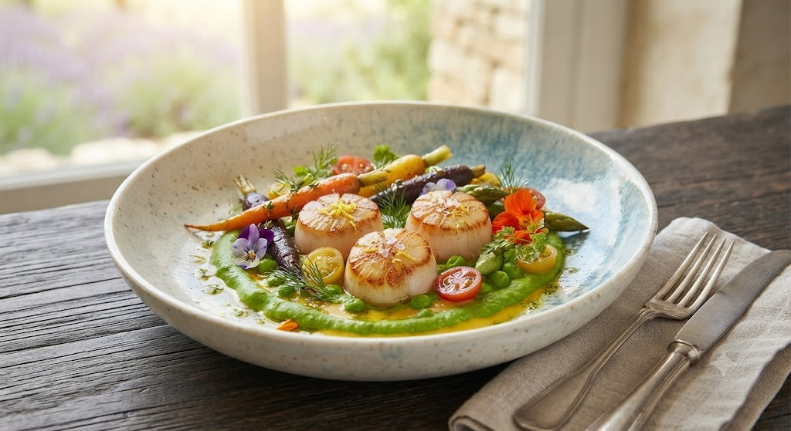
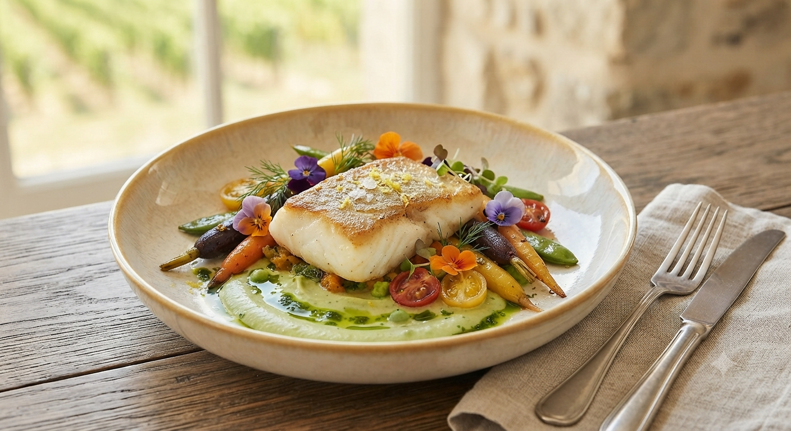
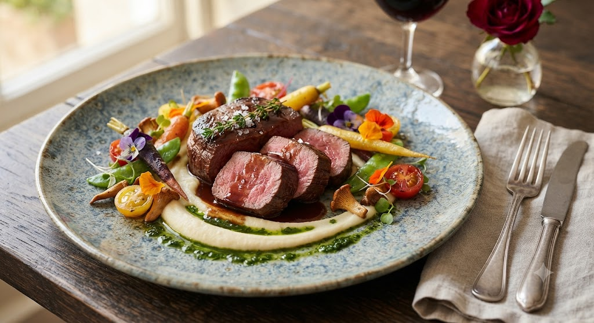
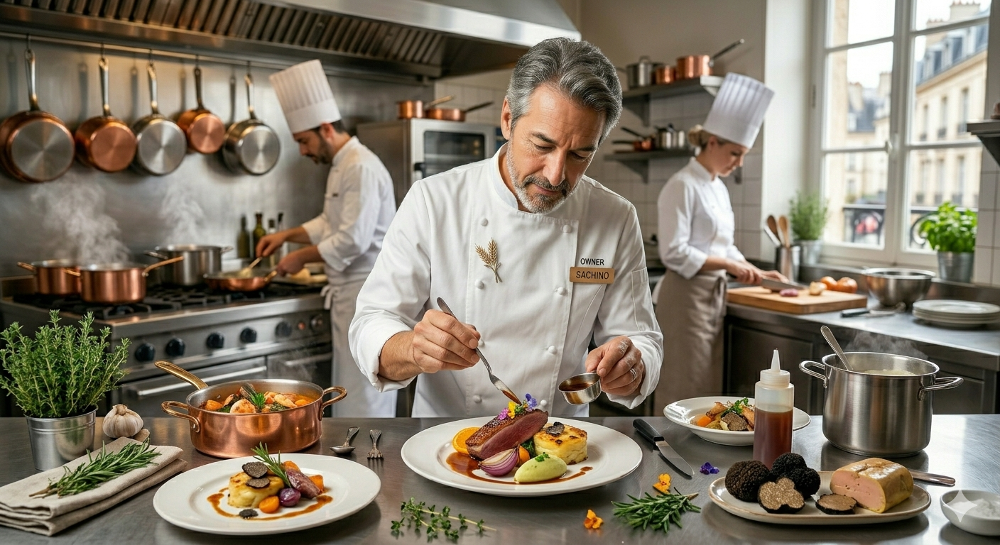
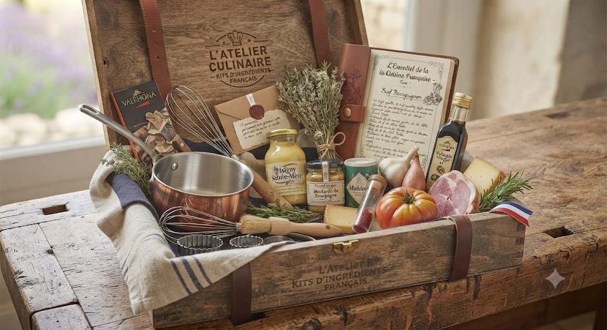

仙台のミシュラン一つ星店「nacrée」でセカンドシェフを務めた渡辺政也が、自らのルーツである宮城県で開いた小さな隠れ家。
伝統的なフレンチの技法を核にしながらも、薪火の香ばしさ、手づかみで楽しむ悦び、そして宮城が育む豊かな食材。 それらが混ざり合い、一皿ごとに物語を紡ぎます。

薪火が繋ぐ、素材の真髄。

全11〜13品で構成される、当店のシグネチャーコース。
鴨、蝦夷鹿、季節の果実。その日、その瞬間に最も輝く食材を。

「料理は体験するもの。五感のすべてを研ぎ澄ませて、この街に憩いと感動を。」
1986年 宮城県石巻市生まれ。
2004年 東京ベイコート倶楽部にてキャリアをスタート。
2015年 仙台のミシュラン一つ星「nacrée」セカンドシェフに就任。
2022年 青葉区国分町に「arkua」を開業。
「記念日を自宅で特別に祝いたい」「小さな子どもがいて、まだゆっくり外食ができない」というお客様の声から生まれた、arkuaの新しい試み。
単なるお取り寄せではなく、最後の仕上げや盛り付けを動画解説を交えながらご自身の手で完成させる、五感を刺激する「体験型アートリエキット」です。 クラウドファンディングで大好評を博したオリジナルデザートと共にお届けする準備を進めております。

arkua
at Home
Address
〒980-0803 宮城県仙台市青葉区国分町3-5-22
清野ビルディング 1F
Station
仙台市地下鉄南北線
「勾当台公園」公園出口2より徒歩3分
Hours
Dinner: 18:00 - 24:00
Close (火曜定休)